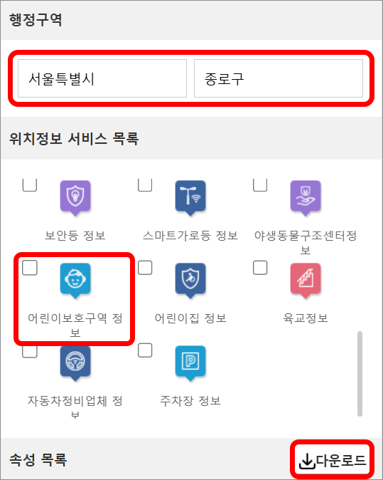

데이터 시각화하기
[창의·융합 프로젝트] 안전 문제, 빅데이터로 해결해 볼까?
어린이 보호 구역 데이터를 코답을 사용하여 시각화해 보자.
1. 문제 상황 이해하기
분석하고 싶은 지역의 어린이 보호 구역 내 CCTV 설치 대수 데이터를 시각화해 보자.
2. 데이터 수집 및 전처리하기
공공 데이터 포털에서 분석하고 싶은 지역별 데이터를 내려받는다.
웹 페이지:
https://www.data.go.kr/tcs/lms/liv/selectLocationView.do

Tip!
필요한 지역의 파일을 선택하여 다운로드 받은 후 불필요한 요소를 삭제하여 데이터를 미리 준비해 둔다.
3. 데이터 가져오기
빅데이터 전처리 과정을 통해 정리한 어린이보호구역 정보(서울특별시_종로구) 데이터를 사용한다.
①
팝업창의 새 문서 버튼을 클릭한다.
②
어린이보호구역 정보(서울특별시_종로구).csv의 주소를 복사한다.
③
메뉴의 ‘가져오기’에서 URL 탭을 선택하여 복사한 주소를 붙여 넣은 뒤 데이터 가져오기 버튼을 클릭한다.
④
Importer 팝업창에서 ‘모든 행 가져오기’를 선택하고 확인 버튼을 클릭한다.
Tip!
지도에 CCTV 위치를 표시하기 위해, 데이터 파일에서 위도는 latitude, 경도는 longitude로 데이터 속성 이름을 수정한다.
4. 데이터 시각화하기
①
지도 아이콘( )을 클릭한다.
②
CCTV 위치가 산점도로 표시된다.
③
CCTV 대수 셀을 지도에 드래그하면 CCTV 대수 별로 데이터가 구분되어 표시된다.
5. 결과 해석하기
산점도로 시각화한 자료를 보고 결과를 해석해 보자.